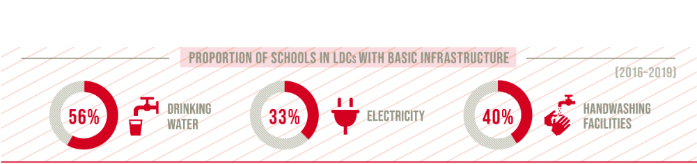
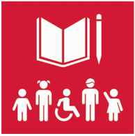

UN SDG 4 is "Ensure inclusive and equitable quality education and promote lifelong learning opportunities for all." Many countries around the world, especially lower income countries, have a low secondary education completion rate. The schools in these countries also tend to lack important utilites, such as electricity. 
 These make it much harder for children in these countries to become successful, as many of them can't complete their education. Improving the education standards around the world, would help to take people living in lower income countries out of poverty. To help children in lower income countries access education, the UN has set up subgoals. Many of the subgoals for goal 4 related to making education more accessable to families. One of the main ways in which this could be achieved is to give every child access to free primary and secondary education. Another important subgoal, is 4.5 which is to elimate all discrimination in education. This includes any discrimination based on race, sex, age, colour and other vulnerable groups. Goal 4 also focuses on giving children education for jobs which will give them financial stability. Another important aspect of goal 4 is upgrading educational infrastructure around the world to give children a safe and effective place to learn. This would give every student equal access to everything that they would need to complete their education.